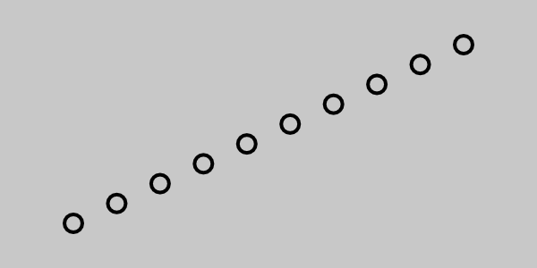

交错
简介
在最小值和最大值之间生成序列值。
Stagger 与子网格（如 复制器 或 文本图形）搭配使用时非常有用。
示例：
在下图中，Stagger 连接到了 Duplicator 的 Shape Position Y 属性。第一个 Id 被赋予 Stagger 的 Minimum 值（-100），最后一个 Id 被赋予 Stagger 的 Maximum 值（100），其余所有Ids 则被赋予介于两者之间的值。这便形成了对角线。

下表展示了 Count 为 5（Id 为 0-4）的 Duplicator 与 Minimum 值为 -100、Maximum 值为 100 的 Stagger 搭配时的结果：
| Id | Stagger |
|---|---|
| 0 | -100 |
| 1 | -50 |
| 2 | 0 |
| 3 | 50 |
| 4 | 100 |
界面
通用属性 +
Minimum：设置最小值或“起始”值。
Maximum：设置最大值或“结束”值。
Offset：为 Minimum 和 Maximum 值加上/减去一个值。
Graph：参见 通用属性。
理解 Stagger 曲线图
Stagger 曲线图的坐标轴并非固定值，它们代表：
- X 轴：子网格中的第一个和最后一个
Id。这取决于 Duplicator 的 Count 或字符串中的字符数（对于文本而言）。 - Y 轴：Stagger 的 Minimum 和 Maximum 值。

默认情况下，曲线图是一条直线，意味着数值以线性方式输出。如果 Minimum = 0 且 Maximum = 200，那么在 X 轴中点处，曲线图将输出值 100。

可以调整曲线图的曲线，以影响 Stagger 输出的数值。

将 Stagger 与时间配合使用

Stagger 也可用于偏移动画。原理完全相同，但通常需要“翻转” Stagger 的默认曲线图，因为期望的是第一个 Id 最先播放动画。
当 Stagger 用于 Duplicator 的 Shape Time Offset 时，每个 Id 的值计算如下：
Stagger Value + Current Frame = Shape Time Offset
在下表中，可以看到当 Duplicator 中有 3 个 Ids（0-2）、Stagger 的 Minimum 值为 -11、Maximum 值为 0 时的情况。
提示：
通常有用的做法是将 Stagger 的 Minimum 属性设为负数、Maximum 设为 0，这样任何偏移动画都不会在第 0 帧之前开始。
| Id | Stagger + | Frame | = Time Offset |
|---|---|---|---|
| 2 | 0 | 0 | 0 |
| 1 | -5 | 0 | -5 |
| 0 | -11 | 0 | -11 |

当移动到第 20 帧时，注意 Id2 在时间上领先。
| Id | Stagger + | Frame | = Time Offset |
|---|---|---|---|
| 2 | 0 | 20 | 20 |
| 1 | -5 | 20 | 15 |
| 0 | -11 | 20 | 9 |
如果翻转 Stagger 曲线图，则现在 Id0 在时间上领先。

| Id | Stagger + | Frame | = Time Offset |
|---|---|---|---|
| 2 | -11 | 0 | -11 |
| 1 | -5 | 0 | -5 |
| 0 | 0 | 0 | 0 |
反转数值：
无论在 Minimum 和 Maximum 中输入什么值，最小的值始终会被用作 Minimum，最大的值会被用作 Maximum。例如，若 Minimum 属性中输入的值实际大于 Maximum 属性，这些值将在图层的计算过程中被反转。